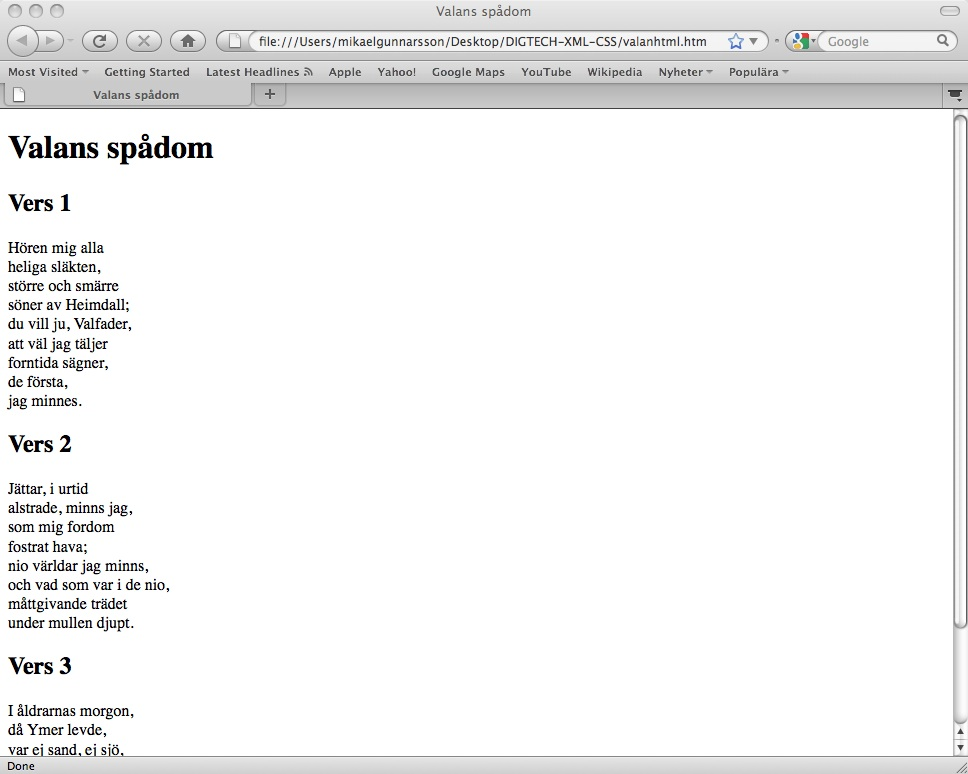

I dessa inledande övningar
skall du försöka identifiera en trädstruktur och dess element i en given oformaterad
text och
därefter märka upp den med den repertoar av HTML-element som står till buds.
Du ska bekanta dig med textstruktur, hyperlänkar och olika typer av listor,
samt hur man kan infoga bilder i en text. Det är säkert frestande att fråga hur
man kan göra si eller så för att få grafiskt mer tilltalande form. Vi väntar emellertid med
den saken helt och hållet tills vi introducerat CSS.
Hädanefter kommer vi för enkelhets skull att emellanåt
tala i termer av HTML och inte XHTML.
Uttrycket 'XHTML' avser alltid XML-varianter av äldre SGML-varianter som väsentligen är identiska.
XHTML 1.0 Strict är identisk med HTML 4.01 Strict men
i XML-syntax. I båda fallen är dock rotelementets namn
html.
En html-fil kan precis som en XML-fil produceras med vilken texteditor som helst
(men observera vad som sagts i inledningen till de
första XML-övningarna, om
teckenkodning). Här utgår vi dock från att du använder EditiX.
Starta därför EditiX och välj New från File-menyn. Välj därefter
i listan XHTML 1.0 document. EditiX kommer nu att infoga en
grundläggande uppmärkning som liknar följande:
<?xml version="1.0" encoding="utf-8"?> <!DOCTYPE html PUBLIC "-//W3C//DTD XHTML 1.0 Strict//EN" "http://www.w3.org/TR/xhtml1/DTD/xhtml1-strict.dtd"> <!-- New document created with EditiX at Sat Dec 12 17:25:09 CET 2009 --> <html xmlns="http://www.w3.org/1999/xhtml"> <head> <title> Your TITLE </title> </head> <body> </body> </html>
I formellt avseende är detta en korrekt bas att utgå ifrån. Alla html-dokument
har ett rotelement html i vilket ingår ett head och
ett body, samt att det i elementet head är obligatoriskt med ett
element title som givetvis skall innehålla webbsidans titel (det är
denna som framträder i webbläsarfönstrets titeletikett
och vanligen används av sökmaskiner vid listning av träffar).
Emellertid är det i praktiken fördelaktigt att något utvidga uppmärkningen. Dels
är den första xml-deklarationen med sin deklaration av teckenkodning inte nog
för alla webbläsare, utan dessa behöver ytterligare en instruktion i ett s k
meta-element som är definierat som ett tomt element. I själva verket är det lika
bra att exkludera xml-deklarationen av skäl som vi tills vidare ignorerar.
Vidare kan det vara
fördelaktigt att ange det språk som dokumentet är skrivet på, med ett attribut
till rotelementet. Modifiera därför enligt följande:
<!DOCTYPE html PUBLIC "-//W3C//DTD XHTML 1.0 Strict//EN" "http://www.w3.org/TR/xhtml1/DTD/xhtml1-strict.dtd"> <html xmlns="http://www.w3.org/1999/xhtml" xml:lang="sv" lang="sv"> <head> <title> Your TITLE </title> <meta http-equiv="Content-Type" content="text/html; charset=utf-8" /> </head> <body> </body> </html>
Teknisk notis, som kan ignoreras: attributet xmlns till elementet html är en s k
namnrymdsdeklaration (Se Ray, 2003, för detta fenomen) och uttrycker den s k
givna namnrymden (default namespace), vilket (formellt sett) möjliggör inklusionen
av andra xml-tillämpningar i html-dokumentet. lang är ett för alla
XML-tillämpningar
förhandsdefinierat attribut. Genom prefixet xml: till
lang refereras till denna övergripande namnrymd.
I exemplet ovan kan du se att utf-8 har valts som teckenkodning. Valet av teckenkodning är inte
ovidkommande och ett besvärligt kapitel. I många fall räcker det att göra som ovan, och helt enkelt
bara tala om vad man har använt, men vissa webbservrar kan ställa till problem om de inte är konfigurerade
att beakta vad som sägs i ett meta-element enligt ovan. Varje webbserver skickar alltid med en
s k http-header, som du som användare aldrig ser, där teckenkodning skall anges, och där vad som anges
äger prioritet över vad som sägs i dokumentets meta-element. Ett sätt att inte behöva bekymra
sig om detta, är att ersätta alla svenska tecken (och andra icke-engelska) med teckenentiter, å med å, ä med ä och
ö med ö.
Det är nu dags att fylla "skelettet" med innehåll. Kopiera och klistra
in från nedanstående exempel den rena texten mellan de båda
body-märkena och spara filen som exempelvis valan.htm
på en plats i filsystemet där du kan hitta tillbaka till den. Observera att
filnamnet skall ha ändelsen htm eller html, och endast bör
innehålla alfanumeriska tecken utan diakriter. Mellanslag är inte acceptabla i
filnamn. Förse också dokumentet med en lämplig titel, dvs skriv något i
elementet title.
<!DOCTYPE html PUBLIC "-//W3C//DTD XHTML 1.0 Strict//EN"
"http://www.w3.org/TR/xhtml1/DTD/xhtml1-strict.dtd">
<html xmlns="http://www.w3.org/1999/xhtml" xml:lang="sv">
<head>
<title></title>
<meta http-equiv="Content-Type" content="text/html; charset=utf-8" />
</head>
<body>
Valans spådom
Vers 1
Hören mig alla
heliga släkten,
större och smärre
söner av Heimdall;
du vill ju, Valfader,
att väl jag täljer
forntida sägner,
de första,
jag minnes.
Vers 2
Jättar, i urtid
alstrade, minns jag,
som mig fordom
fostrat hava;
nio världar jag minns,
och vad som var i de nio,
måttgivande trädet
under mullen djupt.
Vers 3
I åldrarnas morgon,
då Ymer levde,
var ej sand, ej sjö,
ej svala vågor;
jorden fanns icke,
ej upptill himlen;
ett gapande svalg fanns
men gräs fanns ingenstädes.
</body>
</html>
Växla nu till Utforskaren (eller Finder i Mac-miljö), leta rätt på filen och öppna den med en valfri webbläsare. Eftersom texten inte har någon uppmärkning alls blir det en enda lång ström av ord som läggs ut i webbläsarfönstret. Karaktäristiskt för såväl XML som SGML är också att tabbar, serier av mellanslag och radbrytningstecken i normalfallet ignoreras när text skall läggas ut.
Betrakta nu texten och fundera en liten stund på hur den kan analyseras med avseende på innehållselement.
I html finns fyra element som kan vara aktuella att använda här:
h1 - för rubriker på högsta nivånh2 - för rubriker på nivå 2p - för styckenbr - för radbrytningar
Alla dessa är normala element med ett öppnande och ett stängande element, utom
radbrytningar som är tomt och skrivs <br />. Använd
nu dessa för att märka upp texten. Markera respektive avsnitt av text som du
avser att märka upp med något av de första tre elementen, välj ur Edit-menyn Surround by a tag
(eller dess motsvarande snabbkommando) och därefter det element du vill märka
upp avsnittet med.
Det mellanslag som i märken för tomma element anges före /
har att göra med att webbläsare egentligen behandlar XHTML som om det vore HTML
(SGML alltså) och att det i SGML finns ett särskilt sett att förkorta
uppmärkning som kan sammanblandas med tomma XHTML-element. Mellanslaget är
alltså till för att säkra kompatibilitet.
<h1>Valans spådom</h1>
<h2> Vers 1</h2>
<p> Hören mig alla<br />
heliga släkten,<br />
större och smärre<br />
söner av Heimdall;<br />
du vill ju, Valfader,<br />
att väl jag täljer<br />
forntida sägner,<br />
de första,<br />
jag minnes.</p>
<h2> Vers 2</h2>
<p>Jättar, i urtid<br />
alstrade, minns jag,<br />
som mig fordom<br />
fostrat hava;<br />
nio världar jag minns,<br />
och vad som var i de nio,<br />
måttgivande trädet<br />
under mullen djupt.</p>
<h2>Vers 3</h2>
<p> I åldrarnas morgon,<br />
då Ymer levde,<br />
var ej sand, ej sjö,<br />
ej svala vågor;<br />
jorden fanns icke,<br />
ej upptill himlen;<br />
ett gapande svalg fanns<br />
men gräs fanns ingenstädes.</p>
I exemplet har vi alltså valt att "översätta" elementet 'vers'
till p, eftersom det inte finns något element i html som är avsett
för skönlitterära verser. I själva verket används p för väldigt
mycket annat än just stycken i en brödtext. Observera att den här lösningen har
översatt strofindelningen med en indelning medelst radbrytningar mellan strofer,
men det kunde också ha gjorts på något annat sätt.
Därför finns inte heller ett br i slutet av varje strof.
Granska nu din text i webbläsaren som tidigare, utan att stänga EditiX och genom
att endast uppdatera webbläsarens innehåll (vilket görs på olika sätt
beroende på i vilken miljö du sitter). Sannolikt liknar den nedanstående
skärmdump.

Här finns en betydelsefull skillnad mellan andra xml-tillämpningar och xhtml som
kräver en förklaring. Så här långt har vi inte definierat någon stil för vår
text och ändå ser vi att rubriker och stycken formateras på ett bestämt sätt. I
samband med övningarna i XML så presenterades all uppmärkning också i
webbläsarfönstret innan någon stil definierats, men när det gäller xhtml och
html så finns i webbläsarna en fördefinierad stil definierad för varje
html-element. Exempelvis är det meta-element som ligger inom
head osynligt.
Det är viktigt att notera att varje vers här inte inkluderar
rubriken, eftersom html inte tillåter rubriker inuti stycken. <h2></h2>
<p></p> är OK, men inte
<p><h2></h2></p>
Listor
Låt oss nu prova en annan lösning för att på så vis lära känna några andra
html-element. Det finns i html två typer av listor som är användbara i många sammanhang,
punktlistor (ul) och numrerade listor (ol).
Strukturen för ol är följande:
<ol> <li>Hören mig alla</li> <li>heliga släkten,</li> .... </ol>
Ersätt nu den tidigare uppmärkningen av varje verskropp av p respektive br, med
numrerade listor. När du gjort det så kan du spara och samtidigt döpa om filen till t ex
valan-ol.htm för att på så sätt kunna återvända till tidigare lösningar
i kommande övningar, där mer fokus läggs på utformning av elementen. Efter varje förändring
du gör kan du byta namn på filen, för att på
så sätt bevara historiken. Prova också
med ul i st f ol.
Det är också möjligt att nästla listor, t ex enligt följande:
<ol>
<li> Vers 1
<ol>
<li>Hören mig alla</li>
<li>heliga släkten,</li>
....
</ol>
</li>
<li> Vers 2
<ol>
<li>
...
</li>
</ol>
</li>
</ol>
Prova. Men här får du vara varsam så att nästlandet blir korrekt.
Länkar
En av de mest utmärkande företeelser för webbsidor är hyperlänkar som kan
beskrivas som en definierad relation mellan ett område i din webbsida och en
annan webbsida (eller ett annat område), där ett område vanligen utgörs av ett
stycke text eller en bild. Länkar definieras med elementet a som är en
förkortning av anchor (ankare) och har alltid ett eller flera attribut.
<a href="http://www.hb.se">HBs webbplats</a>
Värdet till attributet href (hyperlink reference) är alltså
i det här fallet en URL.
Värdet till href kan vara en URI eller en URI
referens. URIer är t ex URLer och URNer, medan en URI referens kan vara endast
ett filnamn, t ex som i <a
href="index.htm">Hem</a>, vilken måste lösas upp
internt för att webbläsaren skall kunna lokalisera filen.
Det är lämpligt att också alltid lägga till ett
element title,
för att på så sätt signalera målet för länken
<a href="http://www.hb.se" title="Högskolan i Borås">HBs webbplats</a>
Leta nu upp lite resurser som relaterar till det stycke fornnordisk
kulturhistoria du arbetat med, och lista dem som länkar i en onumrerad lista. Du
får själv välja var du vill placera dem, men notera att a är en typ
av element som måste finnas inuti ett omgivande element av annan typ, t ex
p. a tillhör kategorin inline-element
... <body> <a href="http://www.hb.se" title="Högskolan i Borås">HBs webbplats</a> </body> </html>
är felaktigt, men
... <body> <p><a href="http://www.hb.se" title="Högskolan i Borås">HBs webbplats</a></p> </body> </html>
eller
... <body> <ol> <li><a href="http://www.hb.se" title="Högskolan i Borås">HBs webbplats</a></li> </ol> </body> </html>
är korrekt.
Bilder
Bilder är givetvis en annan väsentlig företeelse i samband med webbsidor. Det
element som används är img som alltid har minst ett attribut,
src, vars värde är en URI eller URI referens som identifierar en
bildfil.
<img src="bild.gif" alt="logotyp för HB" />
Bilder lagras alltså separat från html-filen och bäddas in i
texten i webbläsaren när denna läser in html-filen.
De är normalt
av en av tre olika typer, gif, jpg eller
png.
Värdet till attributet alt skall alltid anges för
den händelse användaren inte kan ta del av bildens innehåll.
Prova nu med att lokalisera en passande bild till Valans sång och
infoga den på lämplig plats. För img gäller att det är ett
inline-element och likartade begränsningar som för a gäller.
Placera därför bilden lämpligen i ett p-element.
När du är klar så se till att EditiX inte ger några felmeddelanden. För säkerhets skull skall du också validera filen i W3Cs HTML-validator. http://validator.w3.org/
Publicering
För att din fil skall bli tillgänglig på nätet eller på annan plats över huvud taget skall du också publicera den, så att du kan referera till den med en url. Om du är campusstudent så följer du instruktionerna här i PingPong som ges under "Instruktioner för homepage". Om du är distansstuderande så är det en bra idé att leta efter möjligheter att få tillgång till en webbarea någonstans, eventuellt på något s k webbhotell som inte kostar allt för mycket. Du kommer att ha nytta av det längre fram.